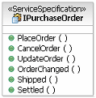
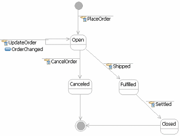

| Рекомендация: State Management for Services |
 |
|
| Связанные элементы |
|---|
IntroductionThe notion of stateful and stateless components is particularly important in the development of distributed applications and systems, although it has only recently tended to become part of the common vocabulary. Essentially, the notion is that if two components or services are communicating and there is some state managed by the server component for the duration of the conversation with the client, it is possible for a crash in the server component (or network failure) to mean that the client is unable to complete the conversation and must start over. Also, it makes the redirecting of client requests to one of a set of components harder unless the set of components share some common store for the state of the conversation. This has become a well known issue in the development of Web applications where its state is carefully managed so as to be avoided where possible and managed either by the client, by the conversation itself (passing the state in each message), or in carefully designed stateful server-side components. For example, the common example for stateful Web interaction is the shopping cart. Users will expect that the shopping cart persists while they briefly walk away from the computer, but how is this accomplished with 100,000 concurrent users? Now, this is not to say that stateful components are inherently bad, they just represent a possible area of performance and resilience failure unless carefully managed and developed to more rigorous standards. In fact, all business applications contain services which by their very nature manage or represent entities that are inherently stateful or contain services which must be accessed in certain logical sequences. In fact the J2EE architecture defines separate Stateless and Stateful Session Beans to explicitly denote these issues and defines certain restrictions on stateful components. This brings us to a simple classification for stateful services, the reasons why we cannot avoid them in the first place. A service may have to be stateful for one of the following reasons:
Another form of state which is found in many component architectures, but is not applicable in the services world, is the notion of transactional state. It is possible in a component world to denote that a get() and update() method on a component may be called by a client within the scope of a transaction created and maintained by the client. The update() method is assumed to change some underlying transactional store. This almost always requires the intervention of the middleware platform to coordinate the transactions and ensure that methods requiring transactions are called by a client with an open transaction. For services, it is not considered appropriate or desirable to follow a model where transactions in the classic two-phase commit sense are held open over a number of service invocations. Now, standards are being developed for transactions across service invocations, but they follow a fundamentally different paradigm (compensation) and are supported differently by middleware platforms. The most obvious technique, which was hinted at above, for the successful development of stateful services is to externalize service state, thus making it not only explicit that the service has state, but that this state can be identified as part of the service specification. This is discussed for the two classes of stateful service below. As most software services will be developed on top of an existing middleware platform such as J2EE or Microsoft .NET, there are implementation techniques described within those platform architectures to help with state management. Therefore, this guideline focuses on design techniques for certain classes of stateful services. It is also worth noting that this is by no means a new area of concern. In mainframe development, the development of conversational and non-conversational transactions in CICS (IBM Customer Information Control System) with green screen (actually 3270 terminal) clients have been known and described by developers, designers, and architects for many years. Persistent Conversation StateThis is a case where the easiest advise is to avoid the situation in the first place. Wherever possible, if a design calls for the management of state during a conversation between a service and its consumers, it would be best to try to decide if another approach can be taken. If not, externalize this state by passing all of the required state data between service and consumer with each message making up the entire conversation. This approach may mean that the size of the messages are significantly increased, but the service itself is now entirely stateless. Another approach is to carry a conversation identifier within each message and persist all conversation state into a permanent store such as a database. While this has significant performance consequences on the server side, it may be countered against the network and client performance saved with the smaller messages. One of the primary purposes of making these services stateless is to be able to provide a set of identical services that can service any request using load-balancing techniques to distribute clients. This load balancing is possible if all state is completely externalized or persisted in a common store. Managing Stateful ResourcesIn this case, we look at the management of resources themselves that have explicit state. In fact, that state is an important aspect of the resource itself. It may be that we can describe the state of the resource, the customer order or network switch mentioned above using a state machine, describing not only the valid states but also the manner in which the operations provided by the service affect the state of the underlying resource(s). However we accomplish this description, it is important to note that this state is an intrinsic part of the resource. However, it may not be explicitly expressed in the information model representing it. It is also important to note that where we are managing any set of entities, we have to be able to identify any individual resource that we are acting upon whether or not they again have an explicit identifier. Note that where a service represents the access to, or query of the state of a physical entity such as a network switch or a process-control element, it is not possible to consider externalizing the state of the entity. The state of a valve is only known by querying the valve. Although we can construct and reply with a message describing the current state of the valve, this is not a permanent situation. The state of the valve can change during transmission or processing of this message. In the Web services area, there is a set of emerging standards known as the Web Services Resource Framework (WSRF) which discusses patterns of stateful services and approaches to the encoding of state, particularly in the case of services representing the management of stateful resources. For more information, see the IBM WS-ResourceFramework site. Stateful Service SpecificationsThe example mentioned above involves a service that has some logical sequencing to the operations it provides. Many services will provide interfaces of this form. In some cases, this relates back to stateful resources except that in that case, the ordering of the operations is based on the state of the managed resource. In this case, the ordering is based on the conversation itself. The following example demonstrates a service specification that has some associated protocol, first the structural specification and then a state machine is shown that describes the behavioral specification.  The Purchase Order can be in one of the states {Open, Canceled, Fulfilled, Closed} and changes state based on the operations provided on the specification above. We also denote that in the case of the self transition on the state Open, we execute the OrderChanged operation sending notifications of the change.  In many cases where services are developed all within a single business and technical scope, detailed behavioral specifications may not be developed or will be described less formally in text. Where services are exposed outside of such a scope, for example, exposed between partitions, they represent a logical specification for interaction between partitions and should be developed in far more detail. Also, detailed specifications allow for more efficient and effective reuse by consumers when services are expected to be reused frequently. |
© Copyright IBM Corp. 1987, 2006. Все права защищены.. |